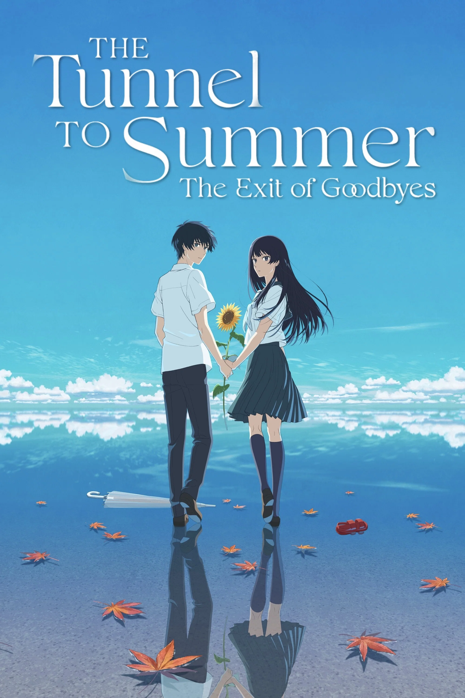

The Tunnel to Summer, the Exit of Goodbyes (Japanese: Natsu e no Tunnel, Sayonara no Deguchi) is a 2022 Japanese animated science-fiction romance/drama directed by Tomohisa Taguchi. It is based on the light novel by Mei Hachimoku. The film runs for about 83 minutes and combines time travel, mystery, romance, and coming-of-age themes.
The story follows Kaoru Tono, a high-school student struggling with the death of his younger sister and problems in his family. One day, he discovers the mysterious Urashima Tunnel, a strange place said to grant a person's deepest wish, but at the cost of years of their life. Kaoru becomes interested in the possibility of using the tunnel to bring back someone he lost. He is joined by Anzu Hanashiro, a new transfer student who has her own dream and personal reasons for investigating the tunnel. As they experiment with the tunnel, they discover that time behaves very differently inside it. Their investigation gradually develops into a friendship and romance, while forcing both characters to confront their regrets, dreams, and willingness to sacrifice their future for something they have lost.
Oji Suzuka — Kaoru Tono
Marie Iitoyo — Anzu Hanashiro
Tasuku Hatanaka — Shohei Kaga
Arisa Komiya — Koharu Kawasaki
Rikiya Koyama — Kaoru's father
Seiran Kobayashi — Karen Tono, Kaoru's deceased sister
The Tunnel to Summer, the Exit of Goodbyes has received generally positive reviews from both critics and audiences. Many viewers praised the film for its beautiful animation, emotional storytelling, and touching portrayal of love and loss. Rotten Tomatoes currently lists the film with a 92% critics score and a 98% audience score, while IMDb gives it a rating of around 7.2/10.
Critics have particularly appreciated the film's atmosphere and its emotional approach to themes such as grief, regret, first love, and moving forward. The Guardian gave the film 3 out of 5 stars, while Screen Daily praised its visual quality and described it as an appealing science-fiction romance. However, some reviewers felt that the story was relatively simple and that it shared similarities with other time-travel and romance anime.